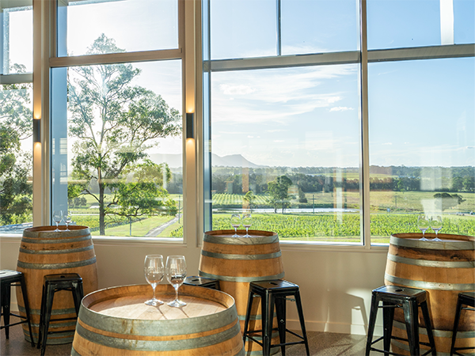
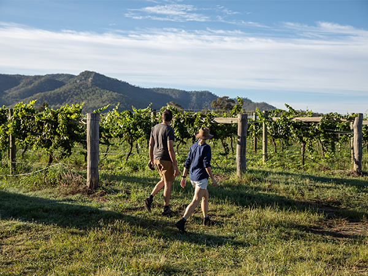

VINEYARD HISTORY
Established in the 1820s, Hunter Valley holds the title of Australia’s oldest wine region. Pioneers like James Busby, who introduced European vine cuttings and George Wyndham, who developed the region’s wine industry played a crucial role in its history. Dr. Henry Lindeman and Maurice O’Shea further enhanced Hunter Valley’s reputation for fine wines. Today, the region blends historical traditions with modern innovations, hosting events such as the Wine & Food Festival, celebrating local flavors and community spirit.

WINEMAKING PROCESS
Experience the craft of winemaking in the Hunter Valley, where exceptional grape varieties such as Semillon and Shiraz thrive in a climate of warm days and cool nights. Only the best fruit is used since each grape is hand-picked at its ripest. It is carefully crushed during the start of the process, which is followed by fermentation that extracts deep tastes and character. The wines are carefully mixed and bottled after being aged in oak or stainless steel barrels, with some aging to further enhance the richness. Discover the love that goes into making Hunter Valley wines, crafted with precisions with a deep respect for tradition.